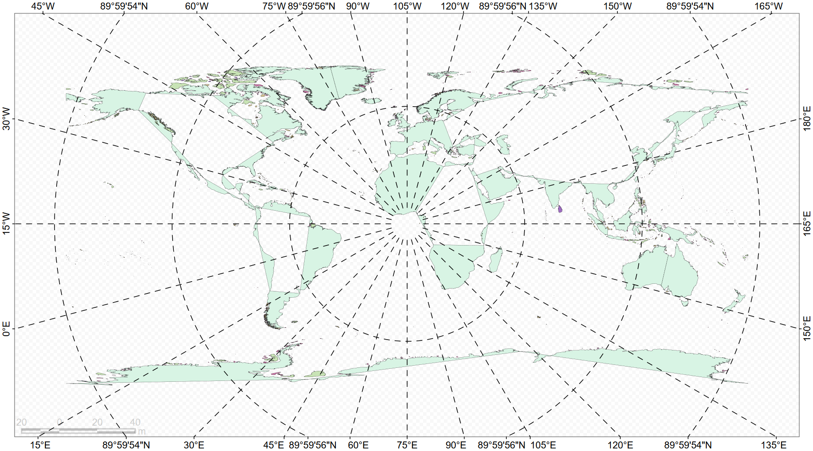
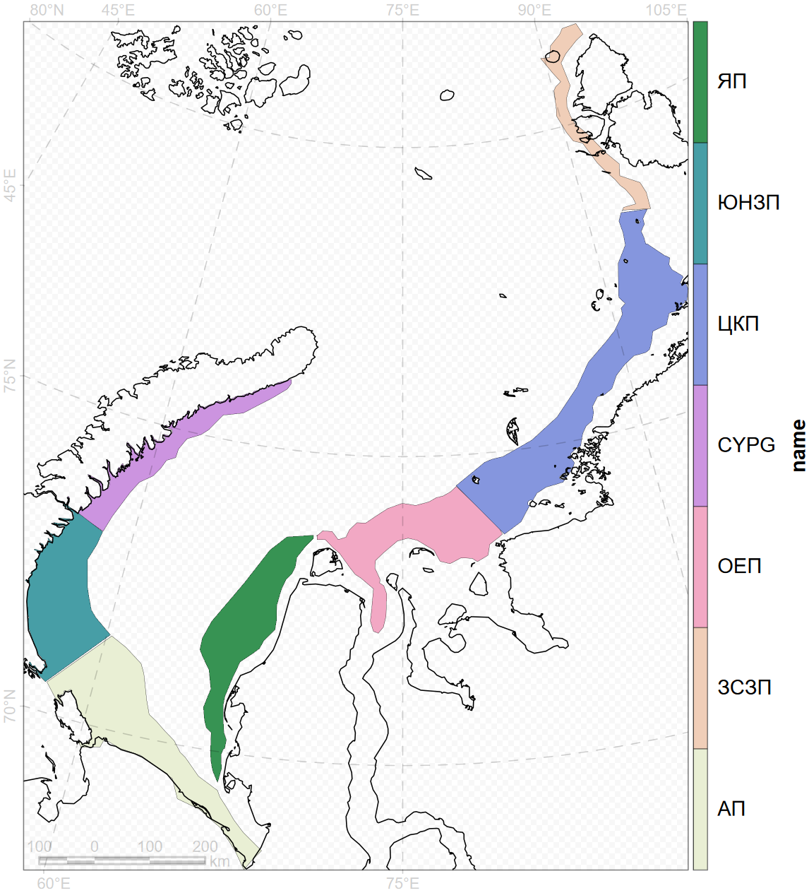
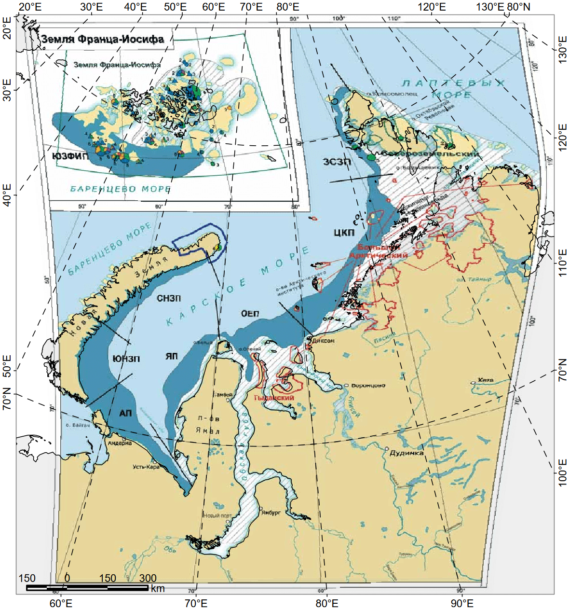

Loading required package: ursalist1 <- spatial_dir()
list2 <- list1[grep("Берегова",basename(list1))]
list1 <- list1[grep("Берегова",basename(list1),inv=TRUE)]
coast <- spatial_read(list2)
glance(coast["scalerank"],legend=NULL,graticule.col="black",coast.col="black")
pol <- lapply(list1,\(fname) {
a <- spatial_read(fname)
ret <- spatial_geometry(a)
spatial_data(ret) <- data.frame(name=spatial_colnames(a)[2])
ret
}) |> spatial_bind()
spatial_write(pol,"bundle.sqlite")
glance(pol,resetGrid=TRUE,border=0,coast.col="black")
res <- ursa_read("Карское_море_оцифровка_Гурьянов.tif")
session_grid(res)
compose_open(legend=NULL)
panel_new()
panel_raster(res)
panel_decor(coast.fill="#00000010"
,graticule.lon=seq(0,350,by=10),graticule.lat=seq(0,80,by=10),col="black")
compose_close()